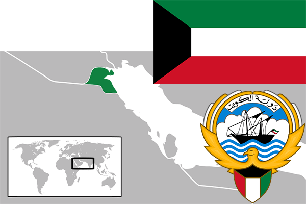

To`liq nomi: Quvayt davlati
Region: G`arbiy Osiyo
Qonunchilik shakli: Konstitutsion Monarxiya
Mustaqillik kuni: 19-iyun 1961-yil (Birlashgan Qirollikdan), 26-fevral 1991-yil (Iroqdan)
Poytaxt: Al-Quvayt
Maydoni: 17 818 km² (dunyoda 136 -o`rinda )
Chegaradosh davlatlari: Saudiy Arabistoni, Iroq
Aholisi: 4 348 395 (dunyoda 140 - o`rinda, 2016 -yil roʻyxat)
Aholi zichligi: 200,2 /km²
Aholining o`rtacha yoshi: 77,4 yil ( 78,5 ayollar, 76,3 erkaklar)
Rasmiy tili: Arab tili
Dini: 85%- Islom, 15% boshqa dinlar
Pul birligi: Quvayt dinori
Telefon prefiksi: +965
Internet domen: .kw
Xalqaro tashkilotlarga a`zoligi: BMT (1963 – yildan), OPEC (Neftni eksport qiluvchi davlatlar tashkiloti) 1960-yildan), Arab Davlatlari Uyushmasi (20,07,1961-yildan)
Dengiz va okeanlarga chiqishi: Fors ko`rfazi dengizi
YIM: Butun: $ 283,976 mlrd, Jon boshiga $ 71 020 (2014 - yil roʻyxati)
Yirik shaharlari: Al-Quvayt